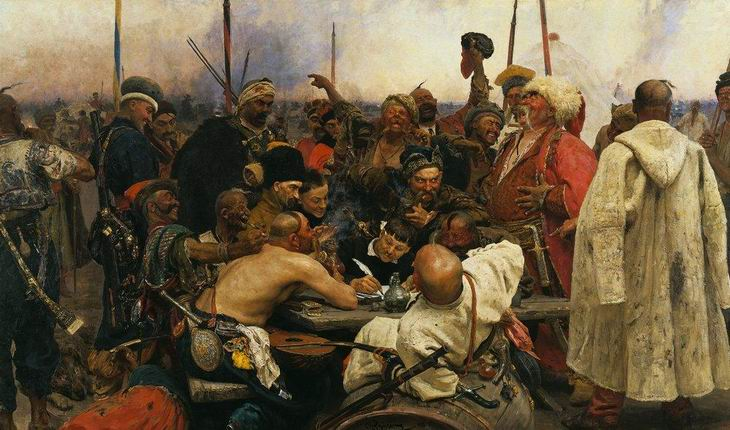
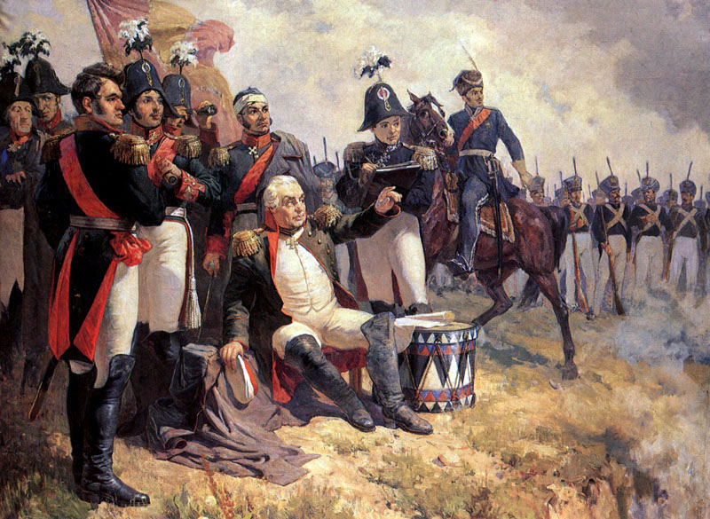
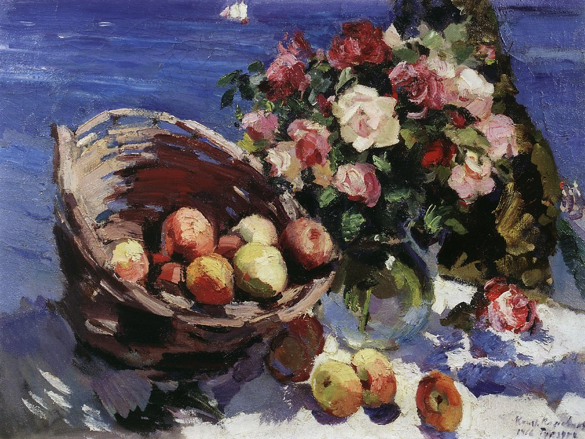
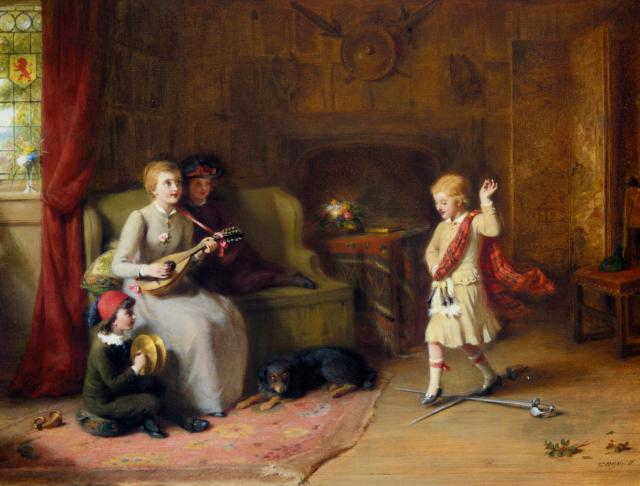
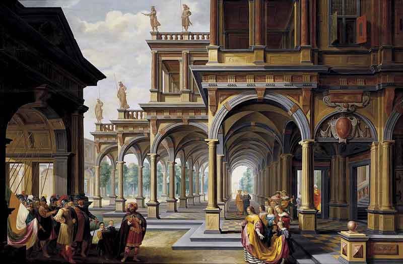
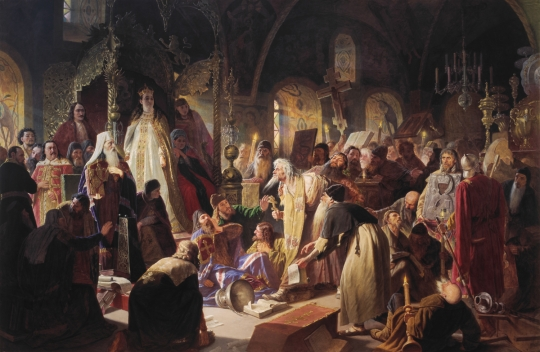

|

Илья Репин - Запорожцы пишут письмо турецкому султану |

Анатолий Шепелюк - Михаил Кутузов во время Бородинского сражения |
||
|

Константин Коровин - Гурзуф. Корзина фруктов. |

Джордж Бернард О'нил - Танец мечей |

Дирк ван Делен - Архитектурное каприччио |

Никита Пустосвят - Спор о вере |